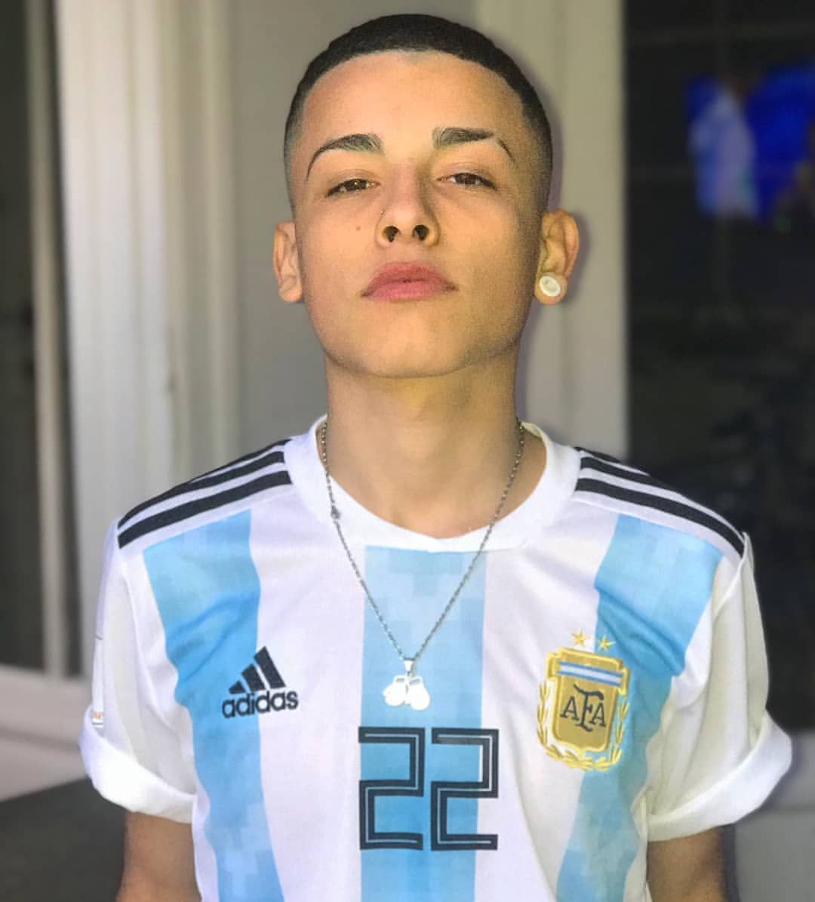
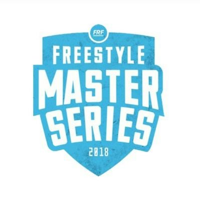

trueno?
Información
Su nombre real es Mateo Palacios Corazzina, pero que él utiliza para las batallas, acciones y canciones es Trueno. Actualmente trueno ha descendido de la Freestyle Master Series(FMS), ya que no pudo alcanzar los puntos suficientes para quedarse en la liga argentona de rap.
Canciones
Trueno tiene muchas canciones las cuales han tenido una repercusión a nivel mundial, lo que ha hecho que trueno se piense dejarse las batallas y dedicarse a la música. Su musica es un estilo que esta entre el reggaeton y trap.
El quinto escalón
Trueno se hizo conocido mundialmente en el mundo del rap gracias a esta competicion que se hacia en la plaza. Cada batalla que subian a youtube tenia muchos millones de reproducciones y todos los raperos que batallaban ahi salieron beneficiados ya que se hicieron conocidos, como por ejemplo trueno que es de quien estamos hablando.
Freestyle Marters Series
Más conocida como FMS es una competicion que es como una liga en la que los creadores(urban roosters) eligieron a los diez mejores gallos de Argentina, en los que se encontraba trueno. Su descenso fue muy polémico ya que hubo batallas en las que trueno se merecía haberse llevado los tres puntos pero el jurado no pesaba lo mismo, lo que determinó que trueno acabara descendiendo de la liga. 
My Skills
Photography
Web Design
Photoshop